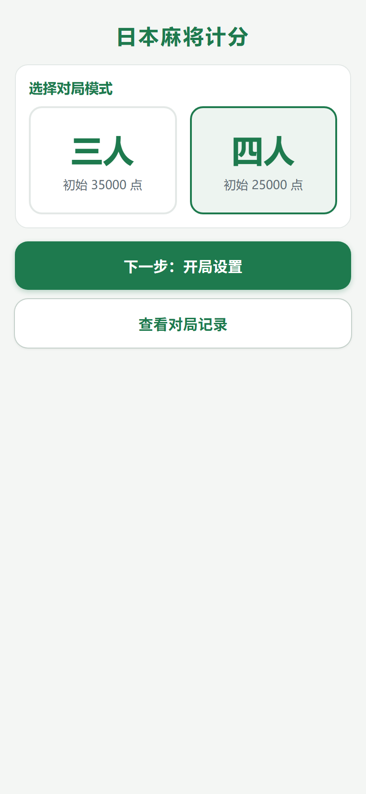
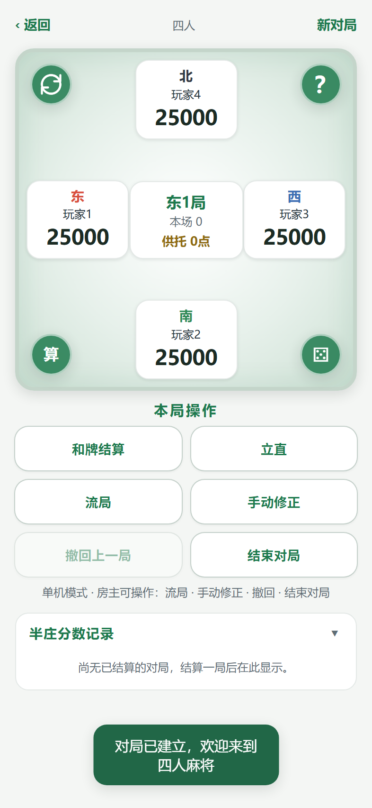
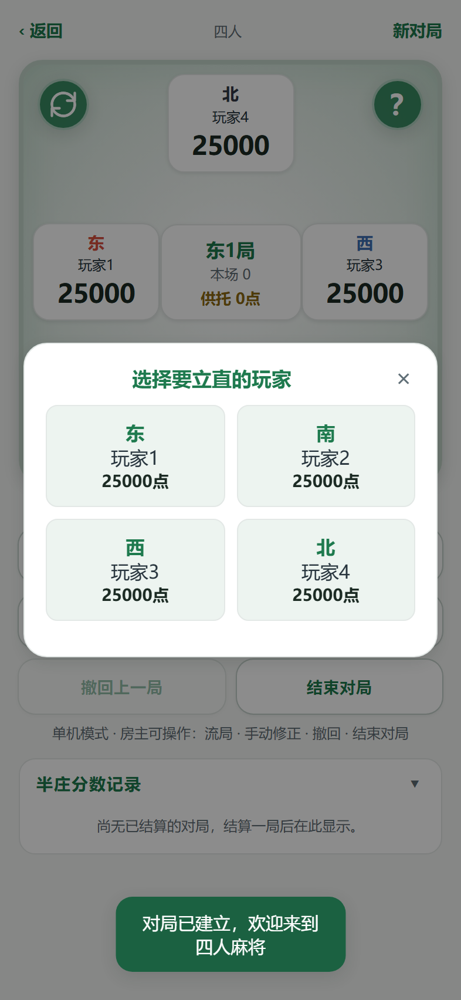
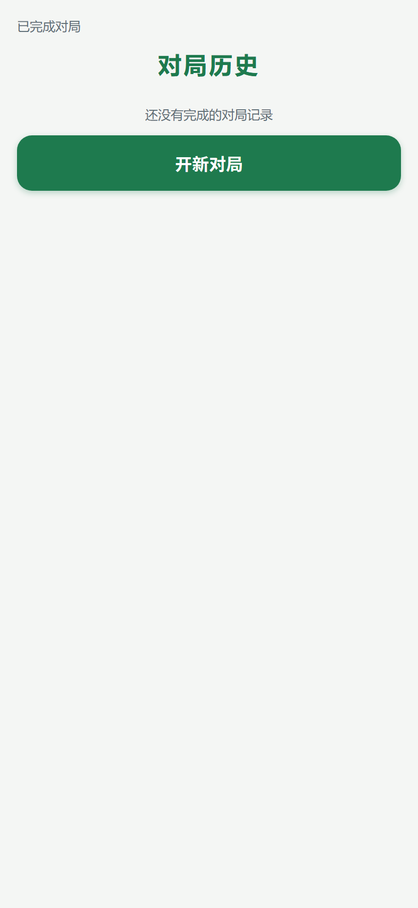

现状 style.css 里圆角出现了 7 种取值（8/10/12/14/16/18/20px），阴影 5 种写法，字重大量 700/800/900 混用——同一屏里「重要」的东西太多，等于没有重点。建议收敛为三档 token，只改变量值，所有组件自动跟随：
WCAG AA 要求正文 ≥ 4.5:1。实测（脚本计算，非目测）：
| 用色 | 现状值 | 对比度 | 建议值 | 对比度 |
|---|---|---|---|---|
弱化文字 --text-dim（meta/hint/状态，12–13px） | #8A979E | 3.00 ✗ | #5F6E76 | 5.28 ✓ |
金色 --gold（neg2 负分/供托强调） | #C9992E | 2.60 ✗ | #8F6B12 | 4.91 ✓ |
| 危险红小字（notice.warn 文字） | #D94F3D | 4.09 ✗ | #C13E2E | 5.26 ✓ |
| 品牌绿（标题/按钮，大字号） | #1E7A4E | 5.32 ✓ | 保持 | — |
.pts.neg，20px 粗体，属「大文字 ≥3:1」）可保持 #D94F3D；只把小字号场景换深色值。改法是给对应选择器换变量值，DOM 不动。推荐最小触控目标 44×44px。现状 .close-x 是 22px 的裸「×」float 右侧，热区只有 22×22；.seat-chip 高约 28px。纯 CSS 用 ::before 扩热区 / 加 padding 修复，视觉不变：
26×26px，误触率高
44×44px，视觉上仍是那个 ×
现状座位卡：风字 18px/800 ≈ 分数 20px/800，局号 24px/800 —— 三者权重几乎打平。计分工具里玩家的分数应该是第一视觉焦点。方向：分数加大 + 等宽数字，风字/局号收敛：
font-variant-numeric: tabular-nums（番符表结果行已在用，座位卡漏了），数字跳动时不抖宽。庄家徽标替代「连庄时 wind 变化」的隐性信息，亲历多场实测找庄家靠数局数。现状主按钮是「拟物厚底」（4px 底边 + 按压位移），而 ghost / seat-chip / mode-card 是「平面描边」——两套语言同屏。建议统一为一套：实心主按钮用轻投影表达可按，次按钮纯描边；同时给弹窗加 180ms 出现动画（现在是 display 硬切）：
点空白处关闭
#toast 的 top→bottom 两行）；页面加 env(safe-area-inset-bottom) 防全面屏手势条遮挡。牌局常在晚上打，纯白桌面刺眼。design-preview 里已有的「方案C · 夜牌」稿（深底 + 亮绿 + 高对比数字）方向是对的。落地成本低：所有颜色已走 CSS 变量，补一套 [data-theme=dark] 变量值即可，建议放到 token 收敛之后再做。
| 项 | 改哪里 | tests 影响 |
|---|---|---|
| Token 收敛 / 对比度 / 阴影 / 字重 / toast 位置 | 只改 css/style.css 变量值与选择器属性 | 无（唯 view-lock-test 读 style.css 的选择器字符串，保持选择器名不动即可） |
| 触控热区 | .close-x / .seat-chip 纯 CSS 扩展 | 无 |
| 座位卡层级 / 庄家徽标 | 徽标需在 index.html 加一个 <span>（或 CSS ::after 由 JS 挂 class） | 涉及 DOM，需跑全量测试确认 |
| 弹窗动效 | .modal-overlay.show 加 animation（display 切换不变） | 无 |
android/app/src/main/assets/ 重新打包。本页仅为方向预览，生产文件未动。